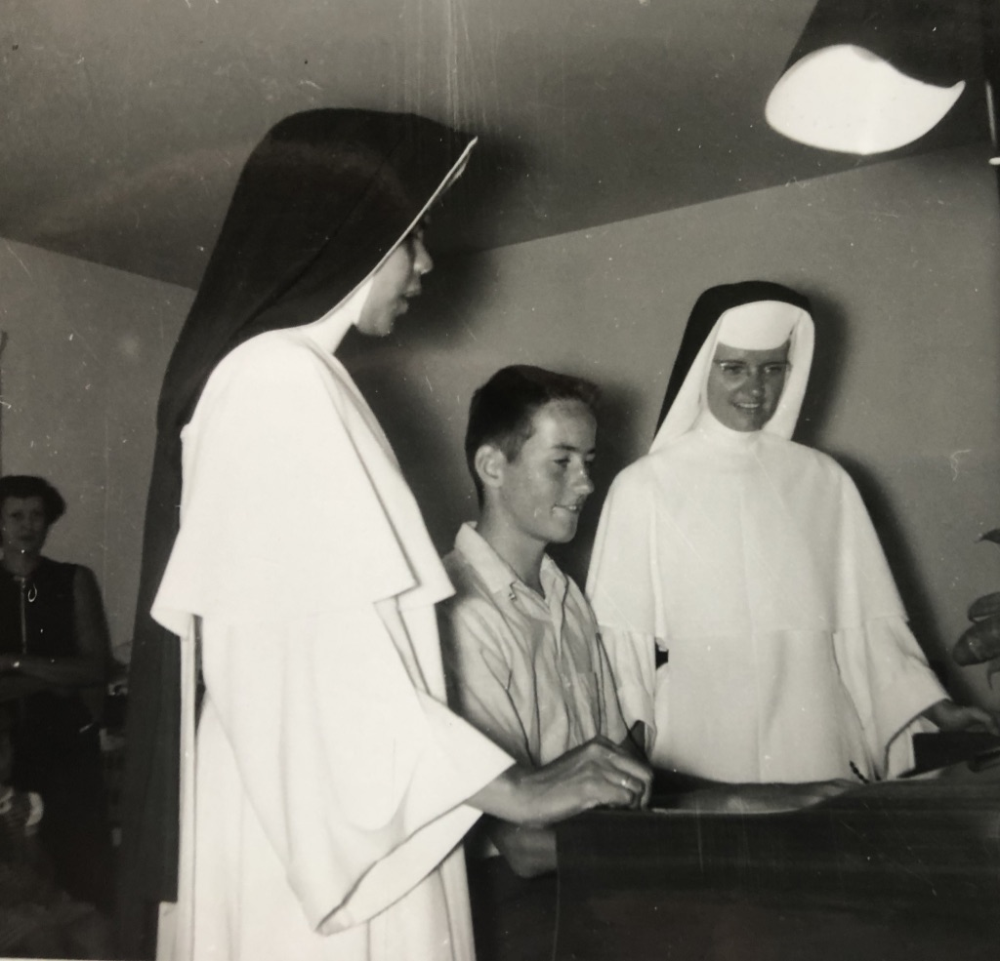

Music in my life
My paternal grandmother played the piano for the silent movies in Detroit and Saginaw, Michigan. I’m told she was classically trained though I don’t know where.
Regardless, she was my inspiration and at the age of 3, I was found sitting next to her on the piano as she played away exciting tunes like the “Twelfth Street Rag” and “Maple Leaf Rag.” When she left the piano, I plucked away at the piano trying to replicate her sounds. Upon hearing this, she told my mother, “He’s your musician. Get him lessons.”
My maternal grandmother funded an old upright piano and at the age of 6, I began piano lessons. It took a couple of years before it clicked, but then there was no stopping me. I was hooked and music became my passion and a therapeutic outlet.
I went to Catholic schools. In the 4th grade, the nuns at Our Lady of Good Counsel in Plymouth, Michigan were looking for a grade-school organist to replace the current organist who would be graduating in a year. They went through the lower grades and had us informally audition. I was selected and they asked my parents to get me organ lessons so that I could assume the responsibility.
My parents bought a small Wurlitzer organ and, at the age of 11, on February 5, 1962, I played my first Mass in church. I was a nervous wreck and the volume pedal went up and down with my shaking foot…. Embarrassing! Gradually my confidence grew and I was paid $1/mass. $30/month wasn’t bad for a kid and it helped to give me spending money and buy my clothing.
In Spring, 1966, I was just completing my freshman year at Detroit Catholic Central High School when my father had a heart attack, the result of an embolism from his leg. He was a smoker and had multiple circulatory problems eventually attributed to Berger’s Disease which resulted in bilateral below-knee amputations plus the amputation of three fingers. With this initial attack and complications, he was out of work for nearly a year.
There were six children in the house and things were tough. The parish priest at our new parish (St. Edith’s in Livonia for which we were founding members) was kind enough to help, hiring my mother to become the grade-school secretary and me, the full-time organist. Without his support, we would have lost our home. My parents sadly told me they could no longer fund my high school tuition. After a great first year, my response was “I’m going” and decided I would find a way to make it happen. Fortunately, the parish priest was the answer to my prayers.
In my third year of college, I took a new position at a neighboring parish (Our Lady of Victory in Northville, Michigan). This added the responsibility of choir director, something I had never done before. While I was a pre-med major at the University of Michigan, I was taking coursework in the School of Music to expand my knowledge and provide skills to make me a better musician. I took organ lessons, voice lessons, choral conducting, hymnology, music history and theory. I met some great people and it helped to lighten the heavy pre-med load. And the job paid my tuition.
Later, I took on another position at Our Lady of Sorrows in Farmington, Michigan working this time for Bishop Joe Imesch. The choir and organ were bigger than any other church I had played at and it was fun. I was also in school so again it helped to pay my way.
As my career progressed and it became impossible to take the responsibility of a full-time organist and choir director position, I became a substitute at various churches in multiple denominations and occasionally played weddings. The supplemental income was perfect.
For many years, again given career responsibility, it was impossible to do anything musically. After many such years, in 2012 I was a member of St. Francis Xavier Church in Manhattan (W. 16th & 6th Avenue in Chelsea). They had a magnificent 52-rank Peregallo three-manual pipe organ in the beautifully restored church. The 50th anniversary of my first Mass was coming up so I asked to play. And it turns out February 5th was a Sunday. I was thrilled when the Director of Music agreed.
I guess I did well enough that they invited me back to play that Easter and subsequent Easters until I left the NYC area (my move intentionally planned two days after the Easter Mass in 2014).
Now that I live in a small French village with a historic pipe organ, I am hoping to get back to playing more actively. Our organ, however, has been removed due to a leak in the church’s roof. It may be a while before it is returned.
At the same time, we are graced in our village with the presence of the head organist of Notre Dame Cathedral in Paris, Phillipe Lafebvre. He did a concert here in August affording me the opportunity to meet him for the first time. He is a gracious man and I look forward to supporting the music program here.
These various opportunities plus participation in my high school’s glee club introduced me to the world of classical music and a variety of composers. My love for music, especially choral music, expanded and is perhaps my greatest passion.
While in Kalamazoo and NYC, I had subscriptions to the symphonic orchestras. Here in France I have purchased tickets to a variety of concerts in Carcassonne, Toulouse and even Paris. Next June I will attend a concert in Evians-Les-Bains, bordering Switzerland at a unique venue called La Grange au Lac. It is a new concert hall set in the woods and open to them behind the stage. It should be a great experience.
Without music, my life would be dull. Music nurtures the soul and is a gift for which I am most grateful to enjoy. It not only enabled my education, it has provided me solace, enlightenment, and inspiration. I am sure I drive my neighbors crazy when I am learning a new piece as I will pay it repeatedly – sometimes for days. So far, the comments have been favorable.
My mother used to say that I would come home from my grade school and hammer on the piano for hours. As a frustrated young man struggling with adolescence and everything else in life, it was indeed my therapy. That therapy also made me a better pianist. So it was a win all the way around.
We never know when a seed is planted. And it all began with my grandmother.

{kind=link}
{kind=link}
{kind=link}

Learn more about Tom